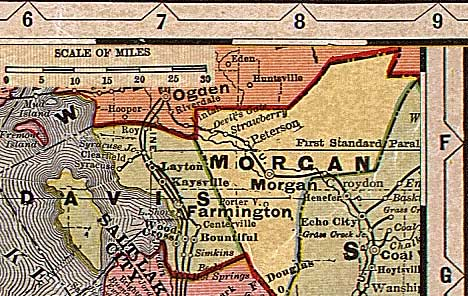

Davis and Morgan Counties, Utah, ca. 1908
From "Deseret Evening News New Home Library Wall Chart" (reprinted with permission)
Weber and Rich Counties
All of Utah
Boxelder
County
Tooele
County

Summit
County
Salt Lake County